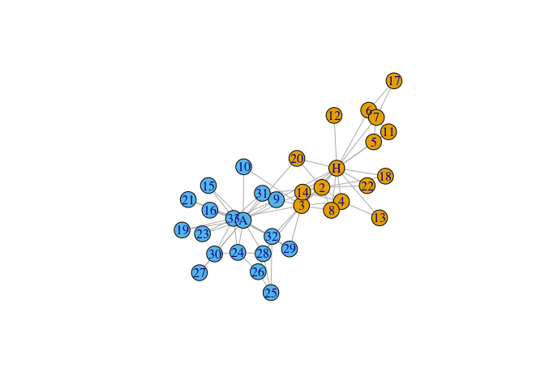

The goal of invertiforms is to provide composable, invertible transformations of sparse matrices. These transformations are primarily useful for network analysis. For example, we provide transforms to row and column center a graph adjacency matrix. This transformation could then be composed with a degree-normalized transformation, and so on. The original adjacency matrix can be recovered by applying inverse transformation. Primarily, this package is for other developers working on spectral matrix packages, but it may also be useful for advanced users who don’t want to go to the hassle of coding up matrix transformations on their own.
Installation
You can install the released version of invertiforms from CRAN with:
install.packages("invertiforms")You can install the development version from GitHub with:
# install.packages("devtools")
devtools::install_github("RoheLab/invertiforms")Transformations
At the moment, we provide convenient tools to:
- row center,
- column center, and
- row and column center
a matrix. Similarly, we provide tools to transform a graph adjacency matrix into the:
- normalized graph Laplacian,
- regularized graph Laplacian, and
- perturbed graph Laplacian.
Example usage
Here we show how invertiforms might help you quickly perform regularized spectral clustering. First we grab some network data and quickly visualize the adjacency matrix.
library(invertiforms)
#> Loading required package: Matrix
#>
#> Attaching package: 'invertiforms'
#> The following object is masked from 'package:base':
#>
#> transform
library(igraph)
#>
#> Attaching package: 'igraph'
#> The following objects are masked from 'package:stats':
#>
#> decompose, spectrum
#> The following object is masked from 'package:base':
#>
#> union
library(igraphdata)
data("karate", package = "igraphdata")
A <- get.adjacency(karate)
image(A)Now we construct the regularized degree normalized graph Laplacian and visualize it.
iform <- RegularizedLaplacian(A, tau_row = 35, tau_col = 35)
L <- transform(iform, A)
image(L)Recovering A from L is straightforward:
A_recovered <- inverse_transform(iform, L)
all.equal(A, A_recovered)
#> [1] TRUEOnce we have L we can do spectral tricks with it. Here we estimate k = 2 clusters.
set.seed(27)
k <- 2
L_svd <- svd(L, k)
safe_project_sphere_rowwise <- function(x, eps = 1e-10) {
sc <- drop(apply(x, 1L, function(y) sum(y^2)))
sc[sc < eps] <- 1
x / sqrt(sc)
}
U <- safe_project_sphere_rowwise(L_svd$u)
km <- kmeans(U, k, nstart = 50)
V(karate)$color <- km$cluster
plot(karate)
Related work
recipes provides non-invertible, composable transformations for tabular data. softImpute provides an Incomplete S4 Matrix class that can be used for double centering sparse matrices.